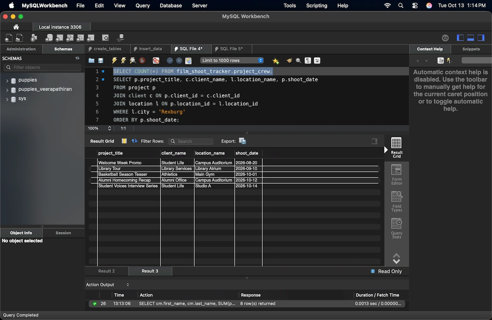
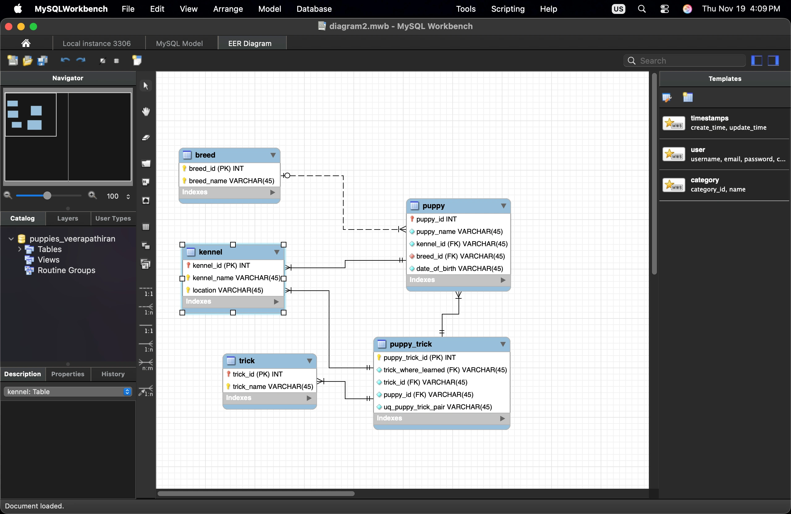
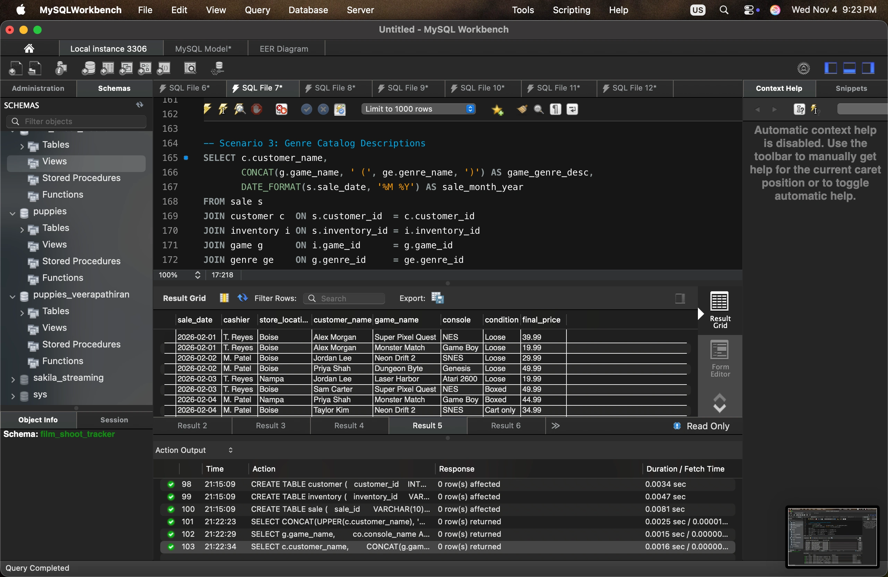

Film Shoot Tracker
A database that keeps film shoots organized, built from my own production experience.
Tools: SQL
I'm studying Data Science because I like turning messy information into clear structure, and clear structure into decisions. These projects show how I design databases, write code, and build for the web.

A database that keeps film shoots organized, built from my own production experience.
Tools: SQL

Three raw CSV files normalized into a clean relational design with an ER diagram, CREATE TABLE scripts, and SQL reports.
Tools: MySQL Workbench, SQL

Project details to be added.
Tools: To be determined
Project details to be added.
Tools: To be determined
Languages and tools: Python, C++, SQL, HTML, CSS, MySQL Workbench.
Strengths: Data modeling, database normalization, project management, and clear communication.